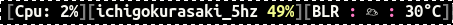
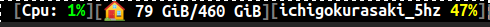
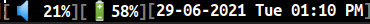

Cnx: Release 0.3.0
August 1, 2021Introduction
Cnx is a simple, yet powerful X11 status bar which can be used with window managers. It gets the data from generic properties defined in Extended Window Manager Hints.
It’s last release happened 2 years ago and I started working on it around 6 months ago.
Why Cnx
We have various X11 status bar like xmobar, polybar etc. But the reason I got interested in Cnx was:
- I wanted something simple, efficient and resource friendly.
- I wanted the source program to be either written in Haskell or Rust as these are the languages I’m most comfortable with.
Note that I had been using Xmobar for more than five years, but I was not very happy with it’s performance. I did attempt to improve it and you can find more details about this in my other blog post.
But despite the above work, I was not able to see significant improvement even if I used a single optimized widget in my Xmobar setup. This led me to believe that there is some overhead within Xmobar itself. The reason for this is the not so efficient event loop in Xmobar (despite the excellent work done by liskin on optimizing it). To give you a rough idea, this is my CPU consumption time when using Xmobar for around 9 hours:
USER PID %CPU %MEM VSZ RSS TTY STAT START TIME COMMAND
sibi 3795 0.6 0.1 1076208404 34036 ? Sl 10:38 4:10 sibi-xmobarThe TIME column above indicates the cumulative CPU time used by the process. In this case, Xmobar took a total time of 4 minutes and 10 seconds.
And similar statistics when using Cnx with a similar set of widgets:
USER PID %CPU %MEM VSZ RSS TTY STAT START TIME COMMAND
sibi 5549 0.0 0.0 1191672 23740 tty1 Sl 09:17 0:11 cnxSo that’s a huge time difference but xmobar’s performance is good enough and it may not be worth worrying too much about it. I would also like to mention the caveat that Cnx is quite young and it has lesser number of widgets available compared to Xmobar. It could possibly have more bugs too. :-)
There is also i3status-rust written in Rust which seemed interesting to me. It has a pretty display and seemed more popular with a bigger community behind it. But unfortunately, it doesn’t seem to work outside of sway or i3 because it works only on window managers that supports i3bar protocol.
My requirements
These are my requirements from a status bar:
- Needs to be kind on resources and shouldn’t hog the CPU.
- It should have all the widgets I use in Xmobar:
- CPU consumption
- Disk usage statistics
- Wireless connection strength
- Battery information
- Volume level
- Clock
This is how my Xmobar status bar looks (splitting into two images for better display):

Getting started with Cnx
When I started working on Cnx, its main branch seemed to be slightly different than the one published in Rust crates registry. For starters, it didn’t compile on Linux. The author of the program, Michael Killough had moved on to use OpenBSD and Cnx’s master version only compiled for that platform. I opened an issue about it and got a reply from the author in a couple of days. Part of the author’s response:
Unfortunately I’m not going to be able to help beyond merging PRs, and I may be quite slow to do that. Please don’t let that put you off though! I wrote Cnx because I wanted to write something that I could use (and I do, everyday!), so I’d encourage you to do the same. :-)
Given that the author was happy to accept my patches, I decided to go ahead with the implementation of the features that I required.
Cnx 0.3.0
Release 0.3.0 includes the following things:
- New crate named cnx-contrib (Similar to
xmonad-contrib) with support for following new widgets:- CPU consumption
- Disk statistics
- Wireless strength information
- Weather station information
- Ability to control rendering for most of the widgets. When we instantiate a new widget, we can pass an optional closure which can be used to render based on the current state of a widget. Example code to demonstrate it for the CPU widget where if the CPU consumption is less than 5%, it will be shown in green. But if it’s more than 50%, it will be shown in red.
let cpu_render = Box::new(|load| {
let mut color = Color::yellow().to_hex();
if load < 5 {
color = Color::green().to_hex();
}
if load > 50 {
color = Color::red().to_hex();
}
pango_markup_single_render(color, load);
});
let cpu = cpu::Cpu::new(attr.clone(), Some(cpu_render))?;So you now have the ability to control it’s behavior programatically in Rust!
- Support pango markup for better display.
- Replaced Travis CI with Github actions.
- Tokio related changes:
- The initial code was written for tokio 0.2.0 and by the time I started working on it tokio 1.0 was available, so did tokio upgrade to “1.2.0”.
- Removed the mio dependency as it wasn’t needed anymore.
- Moved from the usage of PollEvented to AsyncFd and implement the Stream trait for XcbEventStream accordingly.
- Started using tokio-stream package for working with asynchronous streams.
With the above changes, this is how my setup with Cnx looks like (splitting into three images for better clarity):


You can see that it’s pretty close to my Xmobar setup. I found Cnx’s rendering works slightly better because of Pango.
Using Cnx along with Xmonad
I currently use Cnx along with Xmonad and it was quite easy to integrate it. All you have to do is to use the ewmh function to add EWMH functionality to your configuration. A minimal working configuration will look like this:
import XMonad
import XMonad.Hooks.EwmhDesktops
main = xmonad $ ewmh def{ handleEventHook =
handleEventHook def <+> fullscreenEventHook }If you are interested to see my entire configuration, you can find it
here. I start cnx via the hook I have defined in my
configuration:
sibiStartupHook :: X ()
sibiStartupHook = do
as <- io getArgs
Bright.setBrightness 1260
setWMName "LG3D"
when (null as) $ do
void $ startProcess (proc myTerminal [])
void $ (startProcess (proc "emacs" ["--daemon"]))
void $ startProcess "google-chrome-stable"
void $ startProcess "cnx"Writing new widgets
I really like how easy it is to implement a new widget for Cnx. All you have to do is this:
- Create a new struct for your widget
- Implement a function to create the above struct
- Implement Widget trait for your struct.
And that’s all! You can have a look at the various widgets inside
cnx-contrib. The weather widget and clock widget are good starting
points if you want to add new widgets.
Future
While I’m quite happy with the current state of Cnx, I believe Cnx is far from complete. Some of the things which would be nice to have are:
- Themes like polybar.
- More widgets! Xmobar supports a ton of different widgets, so having feature parity with them would be good.
- NixOS module integration.